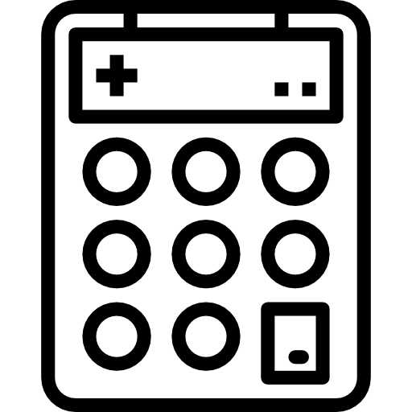

I'm water에서는 당신에게 딱 맞는 일일 물 섭취량을 계산해볼 수 있습니다. 물은 너무 적게 마셔도, 너무 많이 마셔도 해롭다고 합니다. 적정량을 계산해보아요 !

I'm water에서는 당신이 하루동안 마신 물의 양을 기록할 수 있습니다. 당신에게 맞는 일일 섭취량을 저장한 후 마신 물의 양을 저장하여 목표를 달성할 수 있습니다.
I'm water는 여러분에게 물에 대한 여러가지 상식들과 재미난 이야기를 들려드립니다. menu를 눌러 about에 들어가면 바로 확인해보실 수 있습니다!